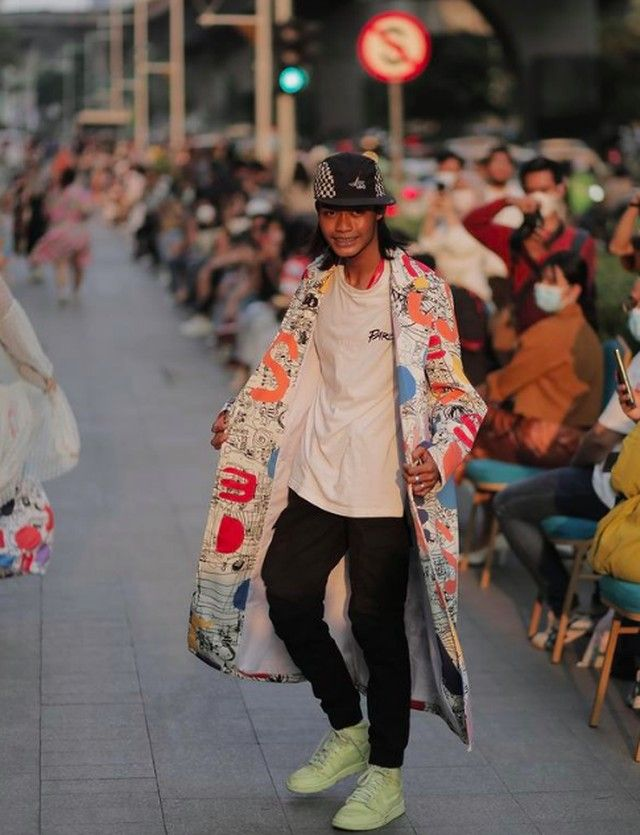
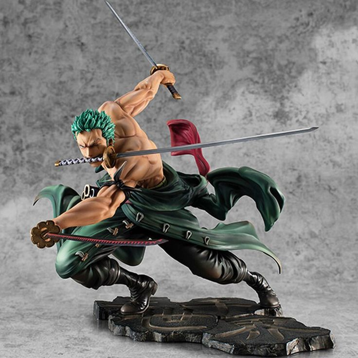
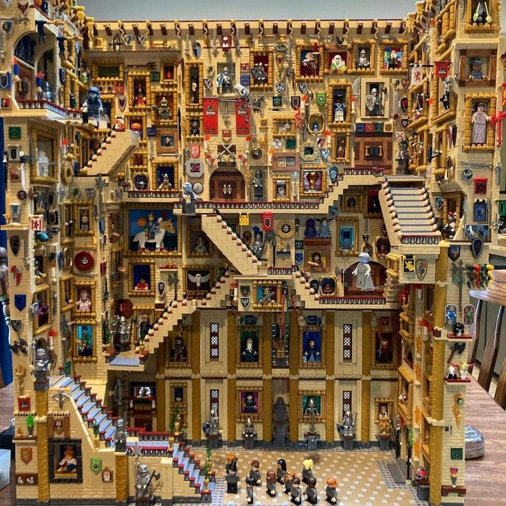

Pengepul Cantik
12 Desember 2024 | 16:00
Fashion Bekas: Tren Baru yang Ramah Lingkungan
Mengapa membuang pakaian lama jika bisa menjadi harta karun baru? Di Bruosok, fashion bekas bukan hanya soal gaya, tapi juga langkah kecil menuju keberlanjutan.
Keuntungan Membeli Fashion Bekas di Bruosok
- Harga Terjangkau: Dapatkan pakaian berkualitas dengan harga yang jauh lebih murah. Belanja hemat tanpa mengurangi gaya!
- Unik dan Vintage: Temukan item fashion yang langka dan unik, mulai dari gaya retro hingga modern. Jadilah trendsetter!
- Kontribusi untuk Lingkungan: Dengan memilih fashion bekas, Anda membantu mengurangi limbah tekstil dan dampak negatif terhadap lingkungan.
Tips Memilih Fashion Bekas yang Tepat
- Periksa Kualitas: Pastikan tidak ada cacat besar seperti robekan atau noda yang sulit dihilangkan.
- Kenali Gaya Anda: Pilih item yang sesuai dengan kepribadian dan kebutuhan Anda.
- Cuci dan Sterilisasi: Selalu cuci pakaian bekas sebelum digunakan untuk memastikan kebersihannya.
Inspirasi OOTD dengan Fashion Bekas
Tidak perlu merogoh kocek dalam untuk tampil stylish. Berikut beberapa inspirasi OOTD:
- Casual Look: Padukan kaos vintage dengan jeans bekas.
- Retro Style: Kenakan jaket denim bekas dengan sepatu klasik.
- Formal Edge: Gunakan blazer second-hand untuk tampil profesional tanpa mengeluarkan banyak biaya.
Ayo Mulai Gaya Hidup Berkelanjutan!
Fashion bekas adalah langkah sederhana menuju masa depan yang lebih baik. Mari berkontribusi untuk lingkungan sekaligus mempercantik penampilan Anda.

Luuky
24 Oktober 2024 | 07:20
Kendaraan Bekas: Pilihan Cerdas untuk Mobilitas Modern
Kendaraan bekas semakin menjadi pilihan utama bagi mereka yang ingin memiliki kendaraan tanpa harus mengeluarkan biaya besar. Di Bruosok, kami memahami kebutuhan ini dan menghadirkan solusi terbaik untuk Anda.
Mengapa Memilih Kendaraan Bekas di Bruosok?
- Kualitas Terjamin: Semua kendaraan kami telah melalui proses inspeksi ketat untuk memastikan performa dan keamanannya.
- Harga Bersahabat: Dengan kendaraan bekas, Anda bisa memiliki kendaraan impian tanpa membebani kantong.
- Banyak Pilihan: Dari mobil keluarga hingga motor sport, temukan beragam jenis kendaraan yang sesuai dengan kebutuhan Anda.
Kenapa Kendaraan Bekas adalah Pilihan Ramah Lingkungan?
Dengan memilih kendaraan bekas, Anda turut berkontribusi dalam mengurangi produksi kendaraan baru, yang berarti mengurangi dampak negatif terhadap lingkungan. Langkah kecil ini dapat membantu menciptakan dunia yang lebih hijau.
Kendaraan Bekas di Era Modern
Teknologi modern memungkinkan perawatan dan peningkatan kendaraan bekas sehingga tetap relevan dengan kebutuhan saat ini. Kendaraan bekas kini tidak hanya berfungsi sebagai alat transportasi, tetapi juga menjadi simbol gaya hidup cerdas.

Mulai Perjalanan Anda dengan Kendaraan Bekas
Dengan membeli kendaraan bekas di Bruosok, Anda tidak hanya mendapatkan nilai lebih, tetapi juga pengalaman berbelanja yang mudah dan terpercaya. Temukan kendaraan yang tepat untuk Anda sekarang!

Wibu Bekas
03 Oktober 2024 | 12:00
Patung One Piece: Koleksi Epik untuk Para Penggemar
Dunia One Piece telah memikat hati jutaan penggemar di seluruh dunia. Di Bruosok, kami menghadirkan koleksi patung One Piece bekas berkualitas tinggi untuk melengkapi koleksi Anda.
Mengapa Memilih Patung One Piece di Bruosok?
- Kualitas Tinggi: Setiap patung yang kami jual telah dipastikan dalam kondisi terbaik untuk memastikan kepuasan penggemar.
- Harga Terjangkau: Nikmati koleksi epik tanpa menguras dompet Anda.
- Koleksi Lengkap: Dari karakter utama seperti Luffy dan Zoro hingga karakter favorit lainnya, temukan semuanya di sini.
Menghidupkan Petualangan One Piece di Rumah Anda
Dengan memiliki patung One Piece, Anda tidak hanya menambah estetika ruang Anda, tetapi juga membawa semangat petualangan dan persahabatan ke dalam kehidupan sehari-hari. Setiap patung adalah simbol dedikasi dan cinta terhadap seri ini.
Keunikan Patung One Piece Bekas
Banyak dari patung bekas yang tersedia di Bruosok merupakan edisi langka atau terbatas yang sulit ditemukan di pasaran. Dengan memilih patung bekas, Anda bisa memiliki koleksi unik yang tidak dimiliki semua orang.
Lengkapi Koleksi Anda Sekarang!
Jangan lewatkan kesempatan untuk memiliki patung One Piece impian Anda. Di Bruosok, kami memastikan proses pembelian yang mudah, aman, dan terpercaya. Jadikan koleksi Anda semakin lengkap hari ini!
Wibu Bekas
01 Oktober 2024 | 22:30
Mainan Lego: Kreativitas Tanpa Batas
Mainan Lego telah menjadi simbol kreativitas dan imajinasi selama beberapa dekade. Di Bruosok, kami menghadirkan koleksi mainan Lego bekas berkualitas tinggi untuk Anda yang ingin terus mengeksplorasi dunia penuh warna ini.
Mengapa Memilih Lego di Bruosok?
- Kualitas Terjamin: Semua set Lego yang tersedia telah diperiksa dengan cermat untuk memastikan kelengkapan dan kualitasnya.
- Harga Bersahabat: Temukan set Lego impian Anda dengan harga yang jauh lebih hemat.
- Koleksi Bervariasi: Dari set klasik hingga edisi khusus, kami menyediakan berbagai pilihan yang sesuai dengan selera Anda.
Bawa Dunia Lego ke Hidup Anda
Dengan mainan Lego, Anda bisa membangun apa saja, mulai dari gedung pencakar langit, kendaraan futuristik, hingga dunia fantasi Anda sendiri. Setiap kepingnya adalah bagian dari cerita yang menunggu untuk dibuat.
Keunikan Lego Bekas
Banyak dari set Lego bekas kami adalah koleksi yang sudah tidak diproduksi lagi, menjadikannya barang langka dan bernilai tinggi untuk kolektor. Selain itu, Anda juga turut mendukung keberlanjutan dengan memilih produk bekas.
Mulai Petualangan Lego Anda Sekarang!
Tidak ada batasan untuk apa yang bisa Anda ciptakan dengan Lego. Di Bruosok, kami memberikan Anda akses ke dunia Lego dengan cara yang mudah, aman, dan terpercaya. Jadikan ide kreatif Anda menjadi kenyataan hari ini!
Tahilalat
28 September 2024 | 14:25
Mainan Tahilalat: Kreasi Lokal yang Penuh Makna
Mainan Tahilalat merupakan salah satu brand lokal Indonesia yang menghadirkan produk-produk kreatif dan unik. Di Bruosok, kami menyediakan koleksi mainan Tahilalat bekas untuk Anda yang ingin merasakan keunikan budaya Indonesia melalui mainan yang penuh cerita.
Mengapa Memilih Mainan Tahilalat di Bruosok?
- Produk Asli Indonesia: Mainan Tahilalat merupakan karya anak bangsa yang menggambarkan kreativitas dan kekayaan budaya lokal.
- Harga Bersahabat: Dapatkan mainan Tahilalat bekas dengan kualitas terbaik tanpa harus menguras kantong Anda.
- Keunikan Desain: Setiap mainan memiliki cerita tersendiri, membuatnya menjadi koleksi yang bernilai tinggi.
Pesan di Balik Mainan Tahilalat
Mainan Tahilalat tidak hanya sekadar mainan. Desainnya sering kali menggambarkan humor, kritik sosial, dan nilai-nilai kehidupan yang relevan dengan budaya Indonesia. Dengan memilikinya, Anda juga mendukung karya lokal yang penuh makna.

Keunikan Mainan Tahilalat Bekas
Banyak dari mainan Tahilalat bekas yang kami tawarkan adalah edisi terbatas atau koleksi langka yang sulit ditemukan. Dengan memilih produk bekas, Anda tidak hanya mendapatkan harga yang lebih terjangkau, tetapi juga memiliki bagian dari sejarah desain lokal.
Dukung Karya Anak Bangsa Sekarang!
Jangan lewatkan kesempatan untuk memiliki mainan Tahilalat impian Anda. Di Bruosok, kami memastikan proses pembelian yang mudah, aman, dan terpercaya. Jadilah bagian dari komunitas pendukung karya lokal hari ini!